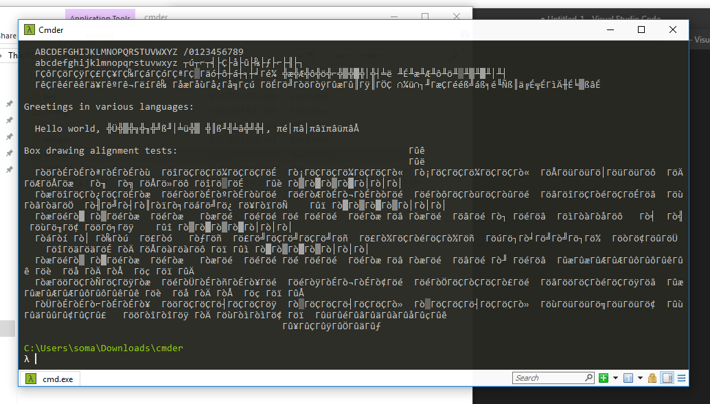
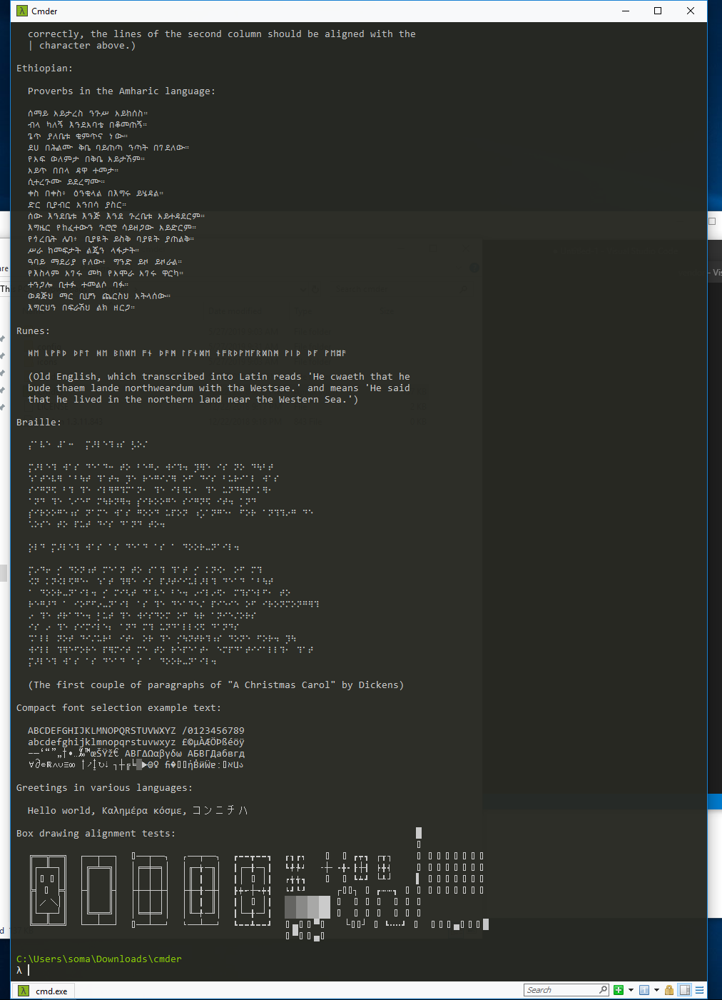

Enabling UTF-8 support on the command line¶
When we're using the command line, we might assume that we can type just about anything. We might want to type things like:
- cupcakes
- crème brûlée
- アイスクリーム
- шоколад
- 🍩🍩🍩
That's freedom, right? But it turns out you probably can't type all of those things!
Your computer might be only set up for English text, or maybe it doesn't like accent marks or Japanese, or maybe 🍰 or 🍦 or 🍭 are just too much for it to handle!
Computers that only really understand English and Western European languages are set up with something called Latin-1, which is a very short list of characters that can be displayed. To make sure our command line can understand (and display) all text around the world – plus emoji – we're going to set up a super long list of characters UTF-8.
Setting up UTF-8 support on OS X¶
OS X by default supports UTF-8 in the command line. But… sometimes it doesn’t? So we’ll add a few commands that will run every time you start the shell that forces UTF-8.
For the commands below: if you’re typing instead of cutting and pasting, make sure you use
>>— two greater-than symbols — not». Also, be sure to hit enter after pasting in the second line.
To start, type echo $SHELL and press enter. If it says /bin/zsh run the following command:
But it says /bin/bash run the following commands:
echo 'export LC_ALL=en_US.UTF-8' >> ~/.bash_profile
echo 'export LANG=en_US.UTF-8' >> ~/.bash_profile
If you do it right, it won’t say anything. But I promise it worked!
Setting up UTF-8 support on Cmder in Windows¶
To see why we need UTF-8 support on Cmder in Windows, run this command from the command line:
Ugly, right? Let's fix it!

Open up Settings again by clicking on the top left-hand corner of the Cmder window and going to Startup > Environment.
In the big box, add a new line that includes the following:
Once that's done, save your settings.

To test that it worked, open up a new Cmder window and run the command again:

Nice and fun, right? That's the beauty of UTF-8!